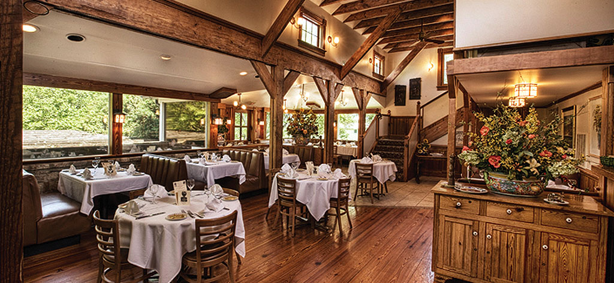
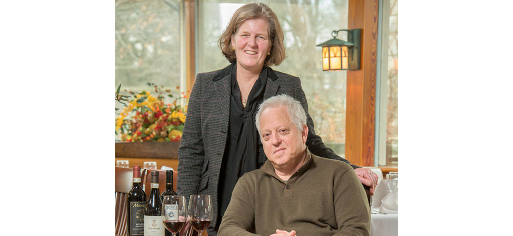

Chef-owned and operated restaurant, Girasole-Panino uses only the freshest ingredients to create authentic, regional Italian menus. In the picturesque village of The Plains, Virginia, just minutes from Middleburg, Virginia, you’ll experience exceptional service, a relaxing European atmosphere, and the highest quality food and wine.
Welcome to Girasole-Panino
Chef-owned and operated, Girasole-Panino uses only the freshest ingredients to create authentic, regional Italian menus. In the picturesque village of The Plains, Virginia, you’ll experience exceptional service, a relaxing European atmosphere, and the highest quality food and wine.
Read About Girasole-PaninoOur Menu
Chef Patierno uses only the freshest and best ingredients. Produce from local farms, grass fed and naturally raised meats, hand-pressed olive oils, and house made pastas are used to create award-winning seasonal menus.
View Our MenusNews and Events
Girasole-Panino offers wine tastings, fixed-price dinners, cooking classes and demonstrations, group tours of Italy, wine and product sales, and other seasonal and special events. Here you’ll find full details of current events as well as news articles about the restaurant.
Read Girasole-Panino’s Latest News and Events